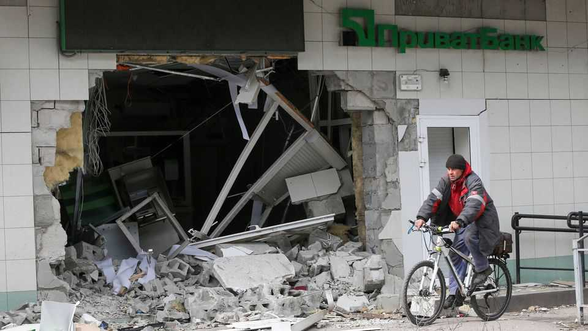

How Ukraine’s biggest bank is run in a war zone
PrivatBank is a case study in adaptation

Oct 15th 2026
ONE TUESDAY, recounts Mikael Bjorknert, the chief executive of PrivatBank, a customer called: a maker of cooling equipment whose factory had just been destroyed in a Russian attack. Instead of defaulting on its loan, the company asked: “Can you wait until Friday?” Helped by a repayment holiday from PrivatBank, Ukraine’s largest lender, it found another home quickly (an old installation with a roof but no internal walls), kept its workers on and bought used kit from competitors. Production restarted within three months. Another year on, the bank is considering a new loan for investment.
The tale of the fridge factory is but one illustration of both the peculiarities of running a bank in a war zone and Ukrainians’ remarkable resilience against a ruthless enemy. Mr Bjorknert, a Swede who has run state-owned PrivatBank since January 2025, says that just 2.9% of its core loans were non-performing in the first half of 2026, a ratio he expects to fall to 2.6% by the end of the year. (Around 2% is typical in the peaceful part of Europe; at the peak of Greece’s banking crisis in 2016-17, almost half of loans were duff.) “The payment ethic”, he says, “is very strong.”
So is PrivatBank’s, when it comes to keeping its 1,000-plus branches open. They may, like other businesses, be closed during missile or drone strikes. But closing them at other times, for want of power or connectivity, say, could be interpreted by Ukrainians as a signal that something bad is afoot. To avoid unnecessarily spooking the people, PrivatBank’s outlets are backed up by batteries, generators and Starlink internet connections.
PrivatBank was taken into public ownership in 2016 with a $5.5bn hole in its books, amid allegations of fraud. Only last year did Ukraine’s Supreme Court finally dismiss an attempt by its former owner, Ihor Kolomoisky (who denied wrongdoing), to overturn the nationalisation. Politicians and central bankers have said they would like to see PrivatBank and other lenders reprivatised. If Ukraine is to join the European Union, eventually that will be expected. Mr Bjorknert says PrivatBank’s corporate governance now reflects international standards (for instance, with separate supervisory and management boards). But with war still raging, privatisation will have to wait.
Mr Bjorknert explains that his task is to turn what is chiefly a retail bank, with 18.1m individual customers—almost half the pre-war population—and 945,000 business clients into a universal lender ready for Ukraine’s reconstruction and for European regulation. Progress is impressive: the bank’s loan book grew by 40% in 2025 (around 30% after adjusting for inflation) and at a similar rate in the first half of this year. Growth may continue. Despite Russia’s intensifying attacks on energy infrastructure, ports and much more, the IMF maintained its forecasts for GDP to rise by 1% this year and 3.5% next in its latest outlook, published on October 12th.
Those attacks will yet take a toll in a fifth winter of full-scale war. And whatever comes next, Ukraine’s financial infrastructure is far from fit. “The construction and mortgage markets need clearer rules,” Mr Bjorknert says. “Ukraine also needs a well-functioning domestic capital market.” Reconstruction will require hundreds of billions of dollars, most of them foreign. Ukrainian banks are too small for such a torrent. With assets of 925bn hryvnia (around $20bn), PrivatBank would rank only fourth in Slovakia, a much smaller neighbour.
Foreign banks are sure to be part of the answer. Several have stayed in Ukraine since Russia invaded, and others may be tempted to enter once durable peace returns. But after years of war in a country that has yet to shake off its reputation for corruption, they will need not only sturdy balance-sheets, but also nerves of steel. ■